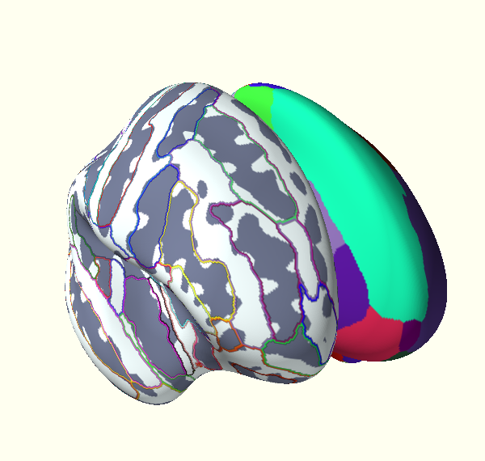

Display a Freesurfer cortical parcellation from an annotation file.
Python source code: plot_parcellation.py
print __doc__
import os
from os.path import join as pjoin
from surfer import Brain
subject_id = 'fsaverage'
hemi = 'lh'
surface = 'inflated'
"""
Bring up the visualization
"""
brain = Brain(subject_id, hemi, surface,
config_opts={"cortex": "bone",
"background": "ivory"})
"""
Display the 'aparc' parcellation borders.
To use annotations that live in your subject's
label directory, just use the annot name.
"""
brain.add_annotation("aparc")
"""
You can also display the regions with "filled in" colors
"""
brain.add_annotation("aparc", borders=False)
"""
You may also provide a full path to an annotation file
at an arbitray location on the disc.
"""
subjects_dir = os.environ["SUBJECTS_DIR"]
annot_path = pjoin(subjects_dir, subject_id, "label", "lh.aparc.annot")
brain.add_annotation(annot_path)